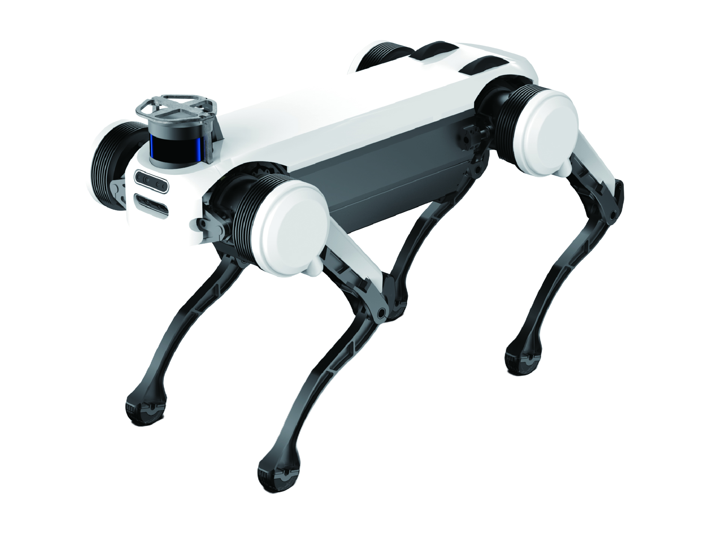

Jueying Pro
A quadruped robot from China, first released 2018.
Sources retrieved: 7 September 2026 (A, B)
- Status
- Discontinued
- Applications
- Indicative price
- Not stated
- Intended use, per the manufacturer
- Security & Inspection / Survey & Exploration / Transport Guarantee / Public RescueSource and note: Intended use, per the manufacturerB deeprobotics.cn · Retrieved 7 September 2026

Manufacturer's own photo.
Specifications
4/33 specifications disclosed 29 not stated
29 fields hidden
How to read the figuresShow guideClose
Not statedThe manufacturer states nothing about this field.NoStated: the robot does not have this.A marker with an asterisk (*) also carries a caveat.
Select a source marker for source details and notes.
Physical1/14 disclosed
Power1/5 disclosed
Sensing and autonomy2/6 disclosed
C C++ PythonPayload and expansion0/3 disclosed
Commercial0/1 disclosed
Compliance & certifications0/4 disclosed
Against the field
Each strip holds every robot of this type in the guide that states the figure, one bar per group of values. Further right means a larger figure, not a better robot.
Runtime
120–240minNote: load condition not stated
106 quadrupeds state a runtime
Jueying Pro states a range, not one figure, so it is shown as a band and not ranked against the others.
Max speed
at least 8km/hat least 4.97mphOur conversion from 8 km/h. The manufacturer does not state an imperial figure itself, so the conversion has no source of its own.
115 quadrupeds state a top speed
Jueying Pro states a lower limit, not one figure, so it is shown open-ended and not ranked against the others.
Notes
DEEP Robotics' first commercially released quadruped, launched in 2018 under the 'Jueying' name, later superseded by the X-series.
Sources
One line per source, not per figure: a source has one retrieval date.
- Aweb.archive.org/web/20210623084540/http://www.deeprobotics.cn/en/products_jy_303.htmlRetrieved 7 September 2026
- Bdeeprobotics.cnMain source. Retrieved 7 September 2026